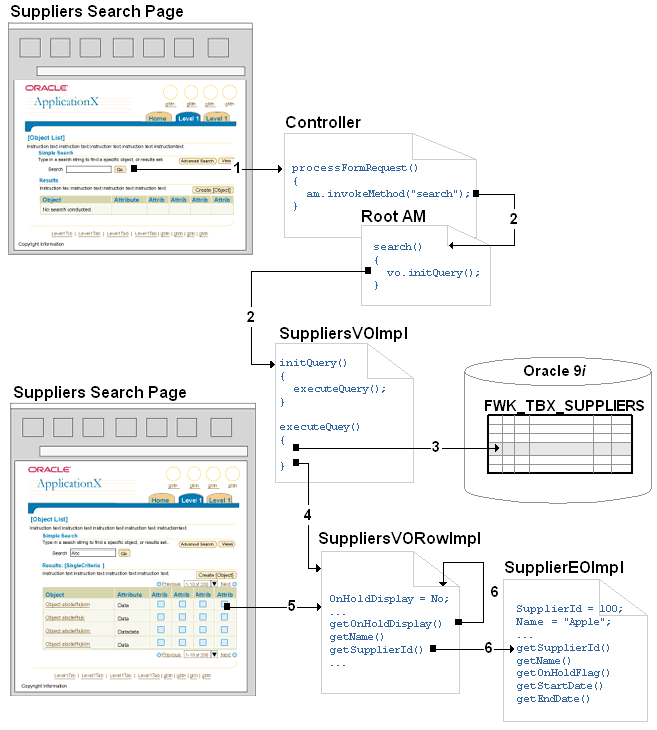
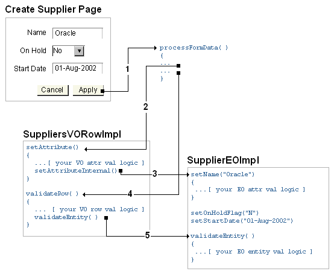
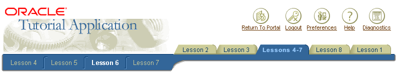

Slug: build_view
页面
创建页面的基本步骤是创建pages，region，items。
Page LayoutRegion的关键属性
创建一个pageLayout区域时，应该特别注意下面的属性：
-
AutoFooter将这个设置为true以保证在页面上有应用的保密和版权说明链接。
-
Help Target如果你需要为当前页显示帮助按钮，必须在这里指定帮助文件（通常是文件名）。
-
AM Definition用于设置页面的根应用模块。必须使用类的全名，比如：oracle.apps.fnd.framework.toolbox.tutorial.server.SearchAM
-
Function Name总是设置页面的保密函数
-
Window Title浏览器窗口标题
-
Title显示在page header中的文本。
-
Form在pageLayout中设置为true，这通常是默认设置，不要在其子对象中添加亲折form。OA Framework在同一个页面中只支持一个form。
-
pageLayout Components注意OA Framework页面基础 一文中提到的，页面包含了特殊的被命名的组件，其中一个就是标识图案。为了在页面关联标识图案，选择pageLayout区域或pageLayoutComponents节点，然后右键菜单中选择创建image item，并把它的Image URI属性设置为
.gif。
Item 的关键属性
每个item类型都有自己的一套属性，不可能每个都介绍，这里介绍一些通常的公共属性。
-
Extends说明新的item继承于一个已存在的item。
-
Attribute Set命名了的item的属性集合。
-
Destination URI对于支持页面导航的对象，这个是导航的目标，比如：OA.jsp?page=/oracle/apps/fnd/framework/toolbox/tutorial/webui/PoDetailsPG&retainAM=Y。
-
(Client Action)Action Type标明item是否可以提交表单，或者产生局部页面渲染事件（partialpage rendering (PPR)）。
-
CSS Class指定item使用的样式表。（多数item，UIX将把这个值按BLAF UI指导方案中的值设置）。
-
Rendered指明相应的对象是否包含了webbean层级结构，需要UIX将HTML发送给浏览器渲染。对于多数item来说，这用于指定一个item是否显示，但有些item是不会实际显示出来的（比如隐藏域），实际上是指定对象是否存在于页面上。
-
View Instance让item绑定到下层的视图对象上以便读写数据，这里标明将item绑定到哪个视图对象实例（包含在一个应用模块中的）。
-
View Attribute将视图对象实例的属性与item绑定。
-
Admin Personalization决定是否允许系统管理员进行个性化定制。
-
User Personalization决定是否允许用户个性化定制。
-
Initial Value定义item的缺省值。
Simplest Possible Expression Language (SPEL)
对于所选的属性，OA Framework支持使用SPEL表达式快速的将属性绑定到下层数据源提供的属性值上。比如，你可以将按钮的Rendered属性绑定到一个视图对象的属性上以检查是否需要显示或隐藏。属性中使用的SPEL语法如下：
|
|
技巧： SPEL是一个业界标准的表达式语言，它包含于JSTL中。
组件重用
OA Component开发环境所宣称的一项关键优势就是可以重用通用的page,region,item定义。
Regions共享
可以按下面的步骤创建共享的region。
注意： 共享region可以包含一个或多个子region。
-
顶级共享region必须保存在它的XML文件中。
-
可以将共享region设置为接收其它region的值。值可能通过“状态管理”一文中描述的方式通过请求传递，或者使用页面事务缓存的值。
-
共享region必须处理失效的情况。比如，如果没有合适的参数传递到region，共享region应该接收或者抛出一个有意义的异常。
-
如果region的scope被设置为Public：
-
顶级region必须有自己的应用模块。应用模块应该包含与这个region相关的视图对象。
-
顶级region必须有自己的控制器。如果需要可以为子region添加控制器。
-
共享region必须添加完整的注释文档。
特殊情况： LOV
LOV与共享region的区别：
-
LOV不需要关联控制器
-
当在页面上使用LOV时，并不从它继承，而是将页面字段的External LOV属性配置为页面与LOV的数据交换。
Pages共享
page实际上只是顶级region为共享region的pageLayout组件。共享page与共享region的创建过程类似。
-
如果要重用一个单独的page或page flow，只要简单的创建一个新的菜单功能并将它指向主页面。
-
如果需要将页面插入到另一个使用了不同根应用模块的page flow，则必须创建一个新的page，并继承共享的page的pageLayout region下的内容。记住正确设置将新页面的根应用模块。
Items共享
可以从任何区域的单个item继承，尽管我们推荐将准备重用的item放到一个重用region中。共享容器region将确保不会任意的修改item而不明确这样修改将影响使用这个item的页面。
通过设置item的Extends属性设置共享。
属性集 Atribute Sets
属性集是一个命名了的可重用的属性集合，可以用于任何OA组件，包括regions，items和其它属性集。它被设计为可以在整个Oracle Application中可以重用的组件，它有效的节约了Oracle和其客户的开销。
-
Oracle节约了翻译和管理的开销
-
客户可以更快的定制应用的全局个性化效果。另外，少数UI元素占用更少的中间层内存，提高了性能和伸缩性。
通常，attributes sets被组织到OA组件包中（独立的XML包文件中），这个包与数据训表对应，一个包对应一个表：
-
包名与不带下划线的数据库表名对应。比如，在OA Framework ToolBox中，有一个表FWK_TBX_PO_HEADERS。对应的属性集包名为FwkTbxPoHeaders。
-
各个属性集是为了显示表中各个列而设置的。
-
基于列的属性集命名与列一致。比如，在FWK_TBS_PO_HEADERS表有一个名为HEADER_ID的列。对应的属性集被命名为HeaderId。如果多个属性集对应于同一个列（这个值被用于不同的情况并使用了不同的prompt属性）时根据实际使用的位置使用不同的前缀来区分。
-
属性集也可以包含通用域头部和按钮等的设置。命名则使用与它们相关联的标签。
使用属性集
在下面的情况下使用属性集：
-
所有的items都与table.column数值关联。比如，供应商查询字段和数据列表中的供应商字段可以使用同样的属性集。
-
所有通用按钮（确定、应用、退出等等）。这种情况下也可以继承按钮的快捷键。
技巧： OA Framework通用按钮属性集包位于/oracle/apps/fnd/attributesets/Buttons/
-
所有通用表格动作列（像删除、修改等等）应该使用相应的 OA Framework按钮属性集。
-
产品中任何通用的按钮；不应该为单独使用的按钮创建或使用属性集。
-
产品中任何共同区域的头部；不应该为单独使用头部创建或使用属性集。
在item上使用属性集：
- item的Attribute Set属性可以设置它的属性集。
将光标放在Attribute Set字段，使用Property Inspector的Set to Default按钮可以清除属性集。
编程方式访问属性集
可以在控制器中访问属性集。比如，下面代码显示了如何保留通用的Create控制属性集的prompt属性。
|
|
URL 参数：Tokens，Encryption，Encoding
Tokens
当在页面定义中指定URL参数时，可以直接指定字符串值或使用token-substituted值，在渲染时它保留了从相关的视图对象的属性（item与视图对象绑定的情况下）。这是很常见的，比如，在表格的列中传递主键到明细页面以便于查询。
Token Sustitution的例子（使用了视图对象的“OrderNum”属性）：
|
|
产生的链接为：
|
|
Token类型
Tokens使用了特殊的字符前缀告诉OA Framework如何获取值。
-
{!Attr} 当URL中存在{!}时将加密属性值（比如，OA.jsp?…&ssn={!SSN}&…）。使用OAPageContext.getParameter(“ssn”)将返回解密后的值。
-
{@Attr} 当URL中存在{@}时属性值将被编码（比如，OA.jsp?…&addr={@EmpAdd}&…）。使用OAPageContext.getParameter(“addr”)将得到解码后的值。
-
{$attr} 原token substitution（不进行编码和加密）因此你必须确保参数值不会打断URL。
-
{@@RETURN_TO_MENU} 可以用于指定应用组件的Destination URI属性，如果你希望用户返回EBS套件的个人主页。如果需要在执行JSP forward时指定这个，可以使用常量OAWebBeanValues.RETURN_TO_MENU_URL。
-
{@@RETURN_TO_PORTAL} 用于指定组件的Destination URI属性，以便让用户返回Portal页。在JSP forward中可以使用常量OAWebBeanValues.RETURN_TO_PORTAL_URL。
编码
任何为请求指定的参数必须遵循HTTP语法规则。比如，不能在URL参数值传递空格；当访问的URL中包含：buyerName=John Doe时将产生运行时错误。
为修正这个错误，我们将对这些值进行编码，编码将替换有问题的字符，将值变为：byerName=John%20Doe。
-
当OA Framework添加参数到请求中时（比如表字段的值），它将对它们自动编码。
-
当调用setForward*方法设置参数时，OA Framework将自动编码。
-
当你自己组装URL参数时（比如，通过调用setDestination方法设置某个bean的URL时），必须对字符串中可能出现的非法字符进行编码。可以将字符串传递给oracle.apps.fnd.framework.webui.OAUrl工具类的encode方法进行处理。
技巧： 如果手工设置URL参数不包含非法字符（比如，“value=Y”）则不需要担心编码的问题。
- 当使用OAPageContext.putParameter设置参数时，如果需要也必须对字符串进行编码。
当使用OAPageContext.getParameter*方法时OA Framework将自动解码参数值，下列情况除外：
-
当为JavaScript函数tokens使用“#”字符时，OA Framework对token值编码，但不会在你调用pageContext.getParameter("
")时自动解码。如果需要，你可以自己使用OAUrl类的decode方法对getParameter方法的返回值进行解码。 -
当你使用一个已经编码了参数调用putParameter方法时，OA Framework将不会对它进行解码。你也必须使用OAUrl的decode方法对getParameter的返回值进行解码。
加密
加密处理将混淆参数值。由于URL请求参数可能是对用户可见的（用户查找HTML页面源码时也可以看到隐藏域的值），总是应该对存储于URL参数或隐藏域的数据进行加密。
另外，上面描述了基于token的加密，OA Framework在oracle.apps.fnd.framework.webui.OAPageContext中提供了方法用于编程中加密和解密请求中的参数值。
样式
OA Framework使用blaf.xss统一定义用户界面样式。
使用样式
所有添中到页面的的region和大多数的item都会自动设置风格。
几种必须为items设置CSS Class属性的情况：
-
如果创建了一个staticStyledText item，用于instruction text，则必须将它的CSS Class设置为OraInstruction Text。
-
任何文本输入域，多选框，poplists和radio必须将CSS Class设置为OraFieldText。不要在radio和checkboxes上使用OraPromptText。
-
如果使用messageStyledText item来显示只读数据，必须将CSS Class设置为OraDataText以便将文字加粗（不要在table columns中使用这个设置）。
技巧： OA Framework新手通常犯的错误是试图修改CSS style来修改组件“原生“的外观。如果发现这样做出了问题（比较困难因为样式设置不会在运行时起作用：
-
确认你使用了正确的bean（region或item style）。
-
如果确认使用了正确的bean，检查它是否公开了一个用于达到这个目的的方法。比如，oracle.apps.fnd.framework.webui.beans.layout.OAHeaderBean继承了setSize(int size)方法以便于你控制header text的size。你不能通过设置header的CSS Class为OraHeaderSubSub来改变这个效果。
创建风格
自定义
OA Framework自动将custom.xss设置为了主样式。任何自定义设置可以添加到这个样式表。
E-Business Suite Application开发者
上面所说的custom.xss包含了oa.xss，它依次包含了blaf.xss。
oa.xss用于包含任何对于BLAF样式的修改。你不应该创建自己的样式表。
无障碍环境
OA Framework应用是无障碍的，可以由盲人、弱视、色盲或聋人使用。
国际化
OA Framework应用被设计为完全本地化。国际化相关的章节讨论了关于语言、时区、日期的数字的国际化。
模型交互
在指定好数据源绑定后，OA Framework自动从模型中读取数据以便视图显示，并自动将用户输入视图中的数据回写到模型。不需要编写代码（除了为下层的实体编写校验）。
读取模型数据
OA Framework每次渲染页面时，它将为每个web bean关联的视图对象属性调用当前视图对象行的get
例如，对于“Suppliers“表，绑定到了SuppliersVO视图对象。SuppliersVO映射到了SupplierEOImpl，尽管它也包含了一个“计算”属性（“OnHoldDisplay”），它与不对应的实体的属性对应。
OA Framework在执行查询后读取模型数据：

-
用户选择“Search“区域中的“Go“按钮查询”Suppliers“表。
-
“Search“区域中的控制器处理按钮事件调用根应用模块的search方法，它返回代理了SuppliersVOImpl类，因此它可以查询自己。
-
在executeQuery方法中，SuppliersVOImpl视图对象在数据库中执行SQL SELECT。
-
对于结果集中的第一行，视图对象创建一个SupplierEOImpl实体对象的实例并根据查询结果设置它的属性。
注意： 实体对象的属性值实际不是存储于视图对象中的。它们“生存”于实体对象，可以被需要的视图对象访问。“计算（Calculated）”或“临时（Transient）”类型的视图属性是存储在SuppliersVORowImpl对象中的。
-
在页面渲染时（在所有查询处理完成后），OA Framework依次为每个web bean调用SuppliersVORowImpl对象中适当的getAttribute("
")方法绑定数据。 -
SuppliersVORowImpl get
方法返回调用对应的SupplierEOImpl get 方法获得的值。对于“计算（calculated）列OnHoldDisplay属性，视图行对象从它自己的缓存中获取值。
写入模型数据
不论何时，浏览器发出POST请求，OA Framework将自动把用户输入表单的数据写入下层的视图对象，它再依次更新对应的实体。
HTTP POST数据过程：

注意： 下面的步骤假设数据库行所对应的实体对象已经被实例化和初始化（比如在进入Create页面时已经调用了视图对象的create方法创建实体对象）。
-
UIX执行onSubmit的JavaScript校验（必填字段，数据类型，格式），并在校验通过时发送POST请求。
-
浏览器发送POST请求，OA Framework调用web bean结构中的processFormData方法。
-
在processFormData内部，OA Framework自动为每个web bean调用下层视图对象的当前行对象的setAttribute(String name, Object value)方法。这也执行编写于视图行对象中任何属性级别（attribute-level）的校验。
-
在setAttribute方法中，视图行自动自动调用对应的下层的实体对象中的set
方法，这也将执行实体对象中相关的属性级别的校验。 -
一旦所有属性被设置后，OA Framework为修改过的每一行调用视图对象的validate方法以执行任何相关的行级（row-level）的校验。。
-
最后，在validate方法中，视图行对象调用下层实体的validateEntity方法以执行相关的实体级别（entity-level）的校验。
注意： OA Framework自动显示模型层在执行processFormData过程中抛出的任何异常，并不会继续调用processFormRequest的下一部。
跳过校验
如上所述，OA Framework在每次form提交时写入模型数据，这意味着所有属性和实体级的校验都被执行。有几个机会让你“短路（short-circuit）“这些错误以防在不方便的时候报告给用户。
缺省值
当使用“Create”页面创建新行时，可以在3个地方指定默认值：
-
[Model] 如果你的视图对象是基于一个或多个实体，你可以覆盖它们的create()方法以编程的方式设置属性级的缺省值。
-
[Model] 也可以在使用BC4J实体定义向导时定义实体属性的缺省值。注意Oracle内部的EBS开发者不应该使用这个选项。
-
[View] 也可以在Oracle JDeveloper OA Extension中设置各个item的Initial Value属性。这个做法的好处是——对于静态值可以在设计时决定——它可以很容易的由用户个性化这些缺省值。
缺省值功能默认是关闭的，必须根据FND:OA:Enable Defaults/FND OA ENABLE DEFAULTS将值设置为Y来启用这个功能。
如果在首选项中启用了并且在视图中（OA Extension或个性化）的表单元素（不能是messageChoice或messageRadioGroup）中指定了默认值，则OA Framework将根据下面的规则设置item的值：
-
如果item与视图对象数据源没有关联，则首选项的设置将不产生影响。OA Framework在页面被渲染后自动设置item为默认值。
-
如果item与视图对象关联，OA Framework会在你调用视图对象的createRow()方法时设置缺省值。
如果在首选项中启用了并且在视图对象中（OA Extension或个性化）的表单元素是messageChoice或messageRadioGroup，则OA Framework将根据下面的规则设置适当的值：
-
如果当前行需要显示的这个属性值不为null，则值被设置为指定的默认值。
-
如果当前需要显示的这个属性值为null，则显示的值将决定于指定的默认值，并且值将被应用于视图对象。
下面的例子显示了创建新行的典型代码：
|
|
createRow()方法调用各个ViewRowImpl的create()方法。在调用create()过程中，OA Framework调用需要指定了缺省值的每个UI组件的setter方法，如果需要这些值将被应用（译：根据下文，应该是指应用到视图对象）。这确保了视图行的校验和相关的实体对象属性的校验。然后OA Framework将视图行对象的状态重置为STATUS_INITIALIZED，以便它不被BC4J组件修改。这确保了用户导航到其它页面时将持有默认值而不会产生丢失工作的警告。在缺省值的处理过程中检查到的任何异常通常都将显示出来。
技巧： 在视图行被创建后默认值只会被应用一次。如果你有一个多页面流带有多个区域，这个区域绑定到相同的下层视图对象——每个区域都对一个视图属性指定了一个不同的Initial Value——只有第一个区域渲染时设置的缺省值会被关联。其它的将被忽略。同样，如果在Page A创建了一个新行，然后导航到Page B，在这里设置了一个属性的Initial Value，缺省值不会被应用，因为行对象是在Page B渲染前创建的。
对于下面的三种情况，OA Framework遵守下面的优先级：
-
（最高级）item属性缺省使用在OA Extension设计的值或Personalizations模块中指定的值。
-
编程方式指定的实体对象属性值（在执行vo.createRow()方法时将代理实体对象的create()方法）。
-
（最低级）在设计时指定的实体对象属性值。
如果需要确保默认值总是被设置而不管值有可能在设计器中指定，你可以覆盖视图对象的insertRow()方法：
|
|
菜单和页面安全
在OA Framework应用中，页面中的菜单是用tab模型来实现的。
OA Framework ToolBox 教程的菜单：

菜单结构提供了两个明显的用途：
-
将内容组织成有含意的单元
-
方便用户在这些单元中导航
菜单实现
在后台，OA Framework实际上包含了Oracle Applications功能和菜单。
导航功能
导航功能表示出应用中的各个页面；每个页面与一个预先定义的功能关联。或许最重要的是，这个功能包含了页面的Web HTML Call。比如，在ToolBox Tutorial 应用中，当用户选择Lesson 3菜单项时，Purchase Order Search页被显示出来。我们为这个页面建立了一个功能，并设置它的Web HTML Call指向我们需要显示的XML页面：
|
|
当用户选择Lesson 3菜单项时，请求被路由到OA.jsp，它初始化一个oracle.apps.fnd.framework.webui.OAPageBean对象处理对应的页面XML文件（OA.jsp是访问OA Framework应用页面的唯一的JSP）。
注意： 单个页面可以被多个功能调用（每个可能通过URL传递不同的参数），它可以用于多个不同的菜单。
导航菜单
导航菜单是一组可重用的功能和子菜单的集合，它最终创建了上面所描述的tab结构。每个OA Framework菜单项都关联到某个Type，这决定了它应该如何被渲染。比如，在上面图表中的Lesson 2 tab的Type为“HTML Tab“。
导航菜单包含了所有可以显示于应用中的功能。你可以有选择的为导航菜单中的单个功能授权。这将在应用安全一节中详细描述。
应用安全
应用安全包含的范围很广泛，在这个章节中我们将涉及一些关键的概念，以便对于它支持的内容及它与菜单定义的关系有个基本的概念。
用户和责任
Oracle应用中的责任是任务的集合，它被授给一个或多个用户。比如，你可能创建一个Benefits Manager和一个普通的Employee责任，两个都在HR应用中使用。你将把这些责任授给单个用户，以便用户快速访问这些模块。
所有的责任都与应用中单个顶级导航菜单相关联。导航菜单最终将包含你的应用支持的所有tab。
之前，责任是将用户按角色分组的主要机制。你可以将菜单分配给责任，并通过从你的责任中排除个别的菜单项来创建安全规则。在运行时，当前责任，组织机构和安全组一起包含了安全环境（secutiry context）。
在R12中，责任的概念被扩展为更广泛的角色（role）。用户可以属于一个或多个角色。所有用户被指定给一个特殊的责任时也被指定给也相应的角色（role）。安全规则是基于许可发放（permission grants）机制，而不是功能排除规则。在运行时，这些许可的发放是在当前安全环境（security context）中被评估（evaluated）的，现在,责任，组织机构和安全组（secutiry group）中了也包含了角色（也被称为接受人（grantee））。
授权和许可
创建导航功能时，必须为页面创建授权功能（Authorization Fuctions也被称为“permissions”）。然后将这些许可（permission）分组到一个平坦（flat）的菜单结构中（也被你为许可集合（permission set）），以允许用户访问相关的页面。
介绍许可集合（permission set）最简单的办法就是通过一个简单的用例。比如，假设你有一个非常简单的Benefits应用，它包含下面四个页面：
| 页面 | 描述 | Benefits（利益）经理访问？ | 员工访问？ |
|---|---|---|---|
| Benefits管理 | 查看、修改、审核、取消审核benefits | Yes | No |
| 创建Benefits | 创建新的Benefits | Yes | No |
| 我的Benefits | 查看当前选择的benefit，并可将新选择的benefit设为自己的 | Yes | Yes |
| 修改Beneficiaries（受益人） | 修改设置beneficiaries | Yes | Yes |
如上面所说的，你需要为每个页面创建导航功能（Navigation Functions）并将它们组织到导航菜单中。为确保用户可以访问正确的页面，你需要按下面的过程处理：
- 第一步，创建许可（permissions）
与导航功能类似，许可是FND表单函数，但在这个环境中，它们只被用于应用安全。
在我们的例子中，我们可以使用为每个页面创建导航功能作为许可。不需要创建额外的许可功能。
- 第二步，创建角色（role）或接受人（grantees）
接受人可以是一个用户（FND_USER）或用户组（被称为role）或“global”。用户（User）（译注：泛指系统用户，可以是人或组织）在FND_USERS中被创建，应该被与单个的具体的人或组织一一对应。角色（Roles）在WF_ROLES中被定义，可以在客户的LDAP系统中被映射到用户组。尽管成员没有被显式的增加，仍然有一个全局（Global）组包含有“所有人（everyone）”
在上面的例子中需要两个用户角色：一个用于将所有管理员（managers）分到管理员角色，另一个用户将包含所有的员工（employees）。由于员工包含了所有人，因此也可以使用全局（Global）角色。
另外，你也可以创建一个责任并把它赋给所有管理员，用这种方式设置授权（grant）。
我们将在第四步创建授权（grants）时将讨论这两种方法。
- 创建许可集合（permission sets）。
许可集合 被作为菜单来实现，但它们只是简单的将许可分组为平面的列表中以便获取许可。概念上，应该将根据角色需要将许可集合分组为一个或多个许可集。
上面的例子需要两个许可集：
-
一个管理员许可集合可以访问所有管理员需要操作的页面。这包含导航功能“Benefits管理“和“创建Benefit”。
-
一个Global许可集合允许任何人访问。这包含了导航功能“我的Benefits“和”修改Beneficiaries“。
- 创建授权
Grant 定义了安全规则，公允许系统中的某些用户访问你的应用中指定的功能或页面。一次 授权（grant） 使 接受人（grantee） 可以访问上面描述的许可集。简单来说，授权将接受人和许可集连接起来。
对上面的例子需要两个 授权(grants) ：
-
管理员被作为管理员角色（manager role）授权关联到管理员许可集合。
-
员工被作为global接受人与Global许可集关联。
-
由于这个grant是与global grantee（任何人）关联，并没有其它的安全约束（不受任何责任、组织或安全组的约束），它可以被你为global grant。
也可以通过其它安全环境因素约束指定接受者（grantee）的授权（grant）。这些因素包括当前用户责任、组织机构、安全组。比如，为了将对管理员的授权（grant）限制在特定组织机构中，可以将组织机构信息与授权（grant）相关联。
可以将管理员许可集合授予管理员角色，也可以将它授予全局接受者（global grantee）。可以将带有安全环境信息的责任与那些允许访问的管理员关联，以限制哪些管理员可以访问。但是，OA Framework推荐使用基于角色的授权替代责任。
页面安全
从上面的例子中，我们注意到可以将页面与许可链接来限制访问。这是使用许可来保护页面渲染的情况。
其它需要使用许可保护页面渲染的情况，包括匿名登录页面，页面需要自动责任设置或切换，且为共享／重用页面。
详细介绍请阅读Chapter 4: Page Security。